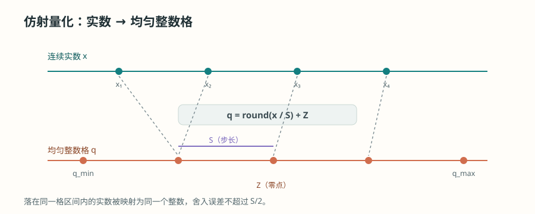
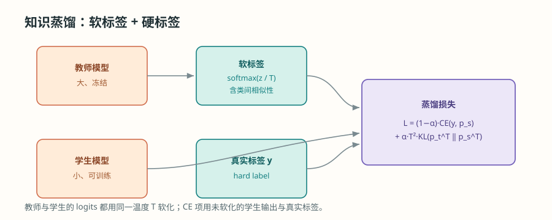
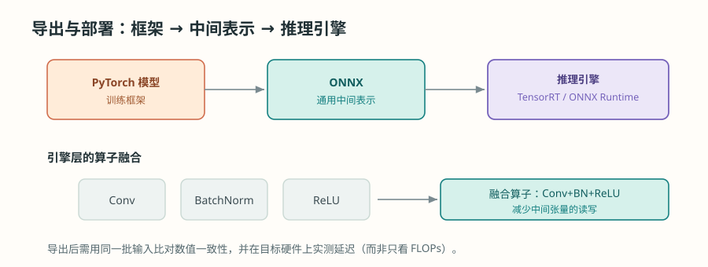

CHAPTER 25 · OPTIMIZATION & DEPLOYMENT
模型优化与部署：让精度落在真实设备上
在服务器上跑高分不等于能落地。端侧往往受限于存储、延迟与功耗，必须在精度、速度、体积之间取舍。本章讲清三类主流压缩手段的机制——量化的仿射映射、剪枝的结构选择、知识蒸馏的软标签——以及把 PyTorch 模型导出到 ONNX / TorchScript / TensorRT 时真正会发生什么。
目标不是单一指标，而是三维权衡
在 benchmark 上把精度推高，与在真实设备上跑得动，是两件事。部署侧的约束通常是三条线：精度（Accuracy）、延迟（Latency）与存储（Storage）它们互相拉扯。一个在 GPU 服务器上高精度的两阶段检测器，搬到嵌入式终端可能因为模型太大、单帧太慢而完全不实用。
更关键的是：FLOPs 低不等于延迟低（第 14 章）。逐元素操作（激活函数、残差加法、重排）的访存开销可能成为瓶颈，所以优化后必须用同一协议、同一硬件实测端到端延迟，而不是只看参数量。
| 场景 | 延迟量级 | 存储上限 | 常用手段 |
|---|---|---|---|
| 云端推理 | 百毫秒级 | 百 MB 以上 | 追求精度，可接受大模型 |
| 移动端 App | 十毫秒级 | 数十 MB | 量化 + 剪枝 + 蒸馏 |
| 嵌入式 / 边缘 | 十毫秒级 | 十 MB 级 | INT8 量化 + 轻量架构 |
量化：用更少的位数表示数值
标准模型用 32 位浮点数（FP32，4 字节）存权重与激活。量化把它们换成 FP16（2 字节）或 INT8（1 字节）。仅从字节数看，FP32 → INT8 理论上带来 4 倍存储压缩；整数运算在许多硬件上也更快。但“更少字节”不等于“同等精度”，关键在如何建立浮点数与整数之间的映射。
最常用的是仿射量化：用一个缩放因子 S 和一个零点 Z 在实数与整数间映射，并截断到整数范围 [q_min, q_max]：
零点 Z 让整数范围能对齐实数上的非对称区间。对称量化取 Z=0，常用于权重；激活因经 ReLU 后非负，常用非对称（Z≠0）。一个步长 S 决定了最大舍入误差约为 S/2。

S 是格距、Z 是零点。落在同一格区间内的实数会被映射为同一个整数，这就是量化误差的来源。按“什么时候量化”分两种：训练后量化（PTQ）用少量校准数据统计激活分布后直接转换，成本低；量化感知训练（QAT）在训练时插入伪量化（fake-quant）算子，让模型提前适应舍入误差，通常精度更好但需要额外训练。含大量逐元素操作或 Transformer 结构的模型对量化更敏感，往往需要 QAT。
剪枝：删权重还是删通道
剪枝删除网络中“不重要”的部分。按删除粒度分两类，差别不在“剪得多不多”，而在剪完能不能真的加速：
- 非结构化剪枝：把单个绝对值小的权重置零，可得到很高的稀疏度，但产生的是稀疏矩阵，常规硬件很难因此加快，往往需要专门的稀疏库。
- 结构化剪枝：直接删掉整个通道/滤波器，模型仍是规则密集结构，可直接享受常规加速。工程上更实用。
通道剪枝先给每个通道打“重要性分”，再删最低分的那批。常用打分依据：权重的 L1/L2 范数；BN 层缩放因子 γ 的大小（越小说明该通道贡献越低）；或基于梯度/泰勒展开估计移除后的损失变化。
剪枝通常要迭代进行：剪一小批 → 微调恢复 → 再剪。剪后不微调基本没有意义。对带残差连接的网络（ResNet、ConvNeXt）尤其要注意：残差分支与主分支的通道数必须保持一致，否则相加会直接报错。
知识蒸馏：学教师的软标签
蒸馏不用删参数，而是用一个大的教师模型去指导一个小的学生模型训练。学生不只拟合真实标签（hard label），还拟合教师的输出分布（soft label）。教师对错类给出的“相似度”本身就是知识：一张猫的图，教师可能输出“猫 0.7、狮子 0.2、老虎 0.1”，告诉学生猫与狮子比与汽车更接近。这类信息被称为暗知识（dark knowledge）。
用一个温度 T 软化分布：T 越大，分布越平滑，类间关系越明显。蒸馏损失是软标签 KL 散度与硬标签交叉熵的加权和：
乘 T² 是为了在求梯度时抵消 softmax 中用 T 缩放 logits 带来的 1/T² 系数，使软/硬两项的梯度尺度可比。α 控制两者比例。

import math
def softmax_T(logits, T):
"""温度 T 的 softmax: T>1 让分布更平滑, 暴露类间相似性."""
m = max(logits)
e = [math.exp((z - m) / T) for z in logits]
s = sum(e)
return [v / s for v in e]
p1 = softmax_T([2.0, 1.0, 0.0], 1.0)
p4 = softmax_T([2.0, 1.0, 0.0], 4.0)
assert abs(sum(p4) - 1.0) < 1e-9 # 仍是概率分布
assert max(p4) - min(p4) < max(p1) - min(p1) # T 越大越接近均匀
print("T=1:", [round(v, 3) for v in p1], " T=4:", [round(v, 3) for v in p4])除软标签外，还可在中间层做特征蒸馏（让学生模仿教师特征图），对检测/分割等含空间信息较多的任务常更有效。
导出与部署：ONNX、TorchScript、TensorRT
训练好的 PyTorch 模型不能直接在其他环境里跑，需要导出为推理格式。三种常见路径：
- ONNX：开放的神经网络交换格式，充当“通用中间表示”。PyTorch 导出 ONNX 后，可在 ONNX Runtime、TensorRT、OpenVINO 等引擎上运行，优势是跨框架。
- TorchScript：PyTorch 原生格式，用
torch.jit.trace（跟踪执行路径）或torch.jit.script（编译模型代码）得到静态图，可直接在 C++（LibTorch）中加载，与 PyTorch 兼容性最好。 - TensorRT：针对 NVIDIA GPU 的推理引擎，通过算子融合、精度校准与内核自动调优做优化，常以 ONNX 为输入。

导出时有几个必须注意的点：静态形状——多数引擎在导出时固定输入尺寸，变尺寸输入需声明动态轴；控制流——trace 只记录实际执行路径，含数据依赖分支（如动态 crop）的模型应改用 script 或改写；算子支持——不支持的算子会被拆分或回退，可能反而变慢。因此导出后仍需用同一批输入比对数值一致性，并实测延迟。
常见陷阱与边界
- 只看 FLOPs/参数量：延迟受访存与算子实现影响，必须同硬件实测（第 14 章）。
- 量化后不做端到端校验：应逐层比对量化前后输出，并用验证集确认精度损失是否可接受。
- 剪枝后不微调：不微调的剪枝得不到可用精度；残差网络的剪枝需保持通道对齐。
- 把硬件与协议混着比较：不同引擎、精度（FP16/INT8）、batch 下的延迟不可直接对比。
- 假设压缩可以叠加无代价：量化 + 剪枝 + 蒸馏同时使用可能互相干扰，需逐一验证。
检查理解：为什么非结构化剪枝可以剪掉很多权重，却不一定变快？
非结构化剪枝只是把单个权重置零，得到的仍是一个稀疏但形状不变的矩阵。常规密集矩阵乘不会跳过零，访存与计算量不会减少，所以硬件上难加速；除非有专门的稀疏运算库/硬件支持。结构化剪枝删的是整通道/滤波器，剩下的是更小的密集模型，因此能直接获得加速。
原始资料与口径
本页的仿射量化、通道重要性（BN 缩放因子）、知识蒸馏与推理引擎能力依据对应原论文与官方文档；压缩倍率与加速比依赖硬件、精度与模型，本页不固化具体数值。
- Quantization and Training of Neural Networks for Efficient Integer-Arithmetic-Only Inference (Jacob 等, arXiv:1712.05877)
- Distilling the Knowledge in a Neural Network (Hinton 等, 2015, arXiv:1503.02531)
- Learning Efficient Convolutional Networks through Network Slimming (Liu 等, 2017, arXiv:1708.06519)
- ONNX 官方站点 · TorchScript 文档
- NVIDIA TensorRT 开发者文档